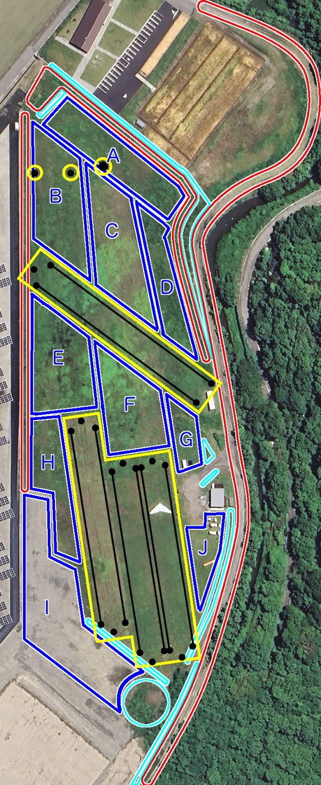

草を放置すると1mを超えることがあり、ランディング時にベースバーへ引っかかるとノーズクラッシュにつながります。 パイロットがキールにぶつかり、大きな怪我につながる可能性もあります。 台地練習でも飛行速度は同じなので、山飛び前から「降りる場所は刈っておく」という意識を共有してください。


マップをタップすると画像を直接開き、拡大して確認できます。
色ごとの作業範囲
黄色：避ける範囲
セーフトーレーン、アンカー、吹き流し。機械では避けます。セーフトーレーンはシンさんが刈ります。アンカー周辺は台地練習生が鎌で刈ってください。
青：タチコマ
広い場所を中心に担当します。A〜Jは、おおむね30分〜1時間で刈れる範囲を目安に分けています。
赤：るんるん
主に用水路沿いのじゃり道と、タチコマでは危険な斜面付近の外側を目印として刈ります。斜面へ落ちないよう注意し、斜面そのものは刈り払い機を使います。
水色：刈り払い機
主に斜面や溝の周辺です。障害物に注意してください。じゃり道の台地側には育てている植物があるため、誤って切らないよう注意します。
タチコマは刃が止まっている状態でも、セーフトーワイヤーの上を絶対に通らないでください。車高が低く、ワイヤーを引っ掛けて引きずる可能性があります。るんるんもワイヤーを越えないようにします。
タチコマ A〜J
A 優先度 低
ランディングとしての整備優先度は低め。隣のビール敷地との境になるため、草が高いと感じたときや、手が空いているときに刈ります。
B・C 優先度 普通
ランディングスキルが低い初心者や、赤白鉄塔・黄色いタンク寄りの風で降りる日に刈ります。台地練習生は、刈っておくとロングして長く飛べます。
D 優先度 低
台地のターン練習、または逆向きで飛ぶ際のテイクオフに使うときに刈ります。
E・F 優先度 高
メインランの先なので、なるべく刈った状態を維持します。雨で沼になりやすいため、地面の状態がよく刈れるときに作業しておきます。
G 優先度 普通
赤白鉄塔・黄色いタンク方向の風で台地トーイングのテイクオフに使うときや、斜面でグラハンしたいときに刈ります。溝を切ってある場所があるため、必ず位置を確認してから発進してください。
H 優先度 高
メインランの一部です。山飛びをする場合は刈っておきます。
I 優先度 低
あまり草は生えませんが、犬との境目なので高くなってきたら刈ります。小山の麓も刈れる範囲まで刈っておくと、刈り払い機で作業する部分を減らせます。
J 優先度 普通
駐車場なので、歩きづらくならないよう刈ります。障害物が少なく範囲も小さいため、初めてタチコマに乗る人は、なるべくここで操作を練習してください。
るんるんで刈る範囲
刈り払い機で刈る範囲
アンカー周りの草は鎌で刈ってください。トーイングロープやプーリーに草が絡まると事故の原因になりかねません。 その日使うアンカー周辺の草の状態を確認する習慣をつけてください。